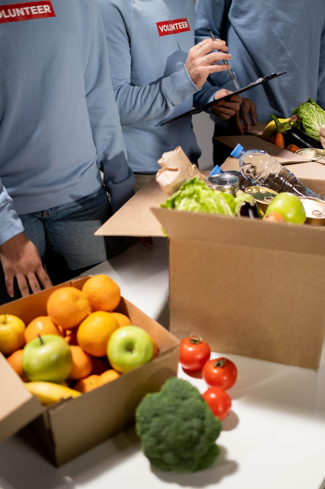

Cara cek bansos lewat HP itu gampang. Kamu bisa melakukannya dalam waktu singkat, tanpa datang ke kantor desa dan tanpa antre. Kementerian Sosial menyediakan situs resmi cekbansos.kemensos.go.id yang bisa dibuka dari browser HP biasa. Kamu cukup menyiapkan NIK dari KTP, lalu sistem akan menampilkan apakah kamu terdaftar sebagai penerima manfaat atau belum. Panduan ini ditulis per Oktober 2026, saat pengecekan bansos periode akhir tahun sedang banyak dicari.
Satu hal penting sebelum mulai: alamat pengecekan resmi hanya situs itu. Di luar sana ada halaman tiruan yang tampilannya mirip dan ujungnya meminta data pribadi atau bahkan uang. Pengecekan di situs resmi Kemensos itu gratis. Kalau ada pihak yang memungut biaya hanya untuk mengecek status bansos, itu bukan jalur resmi.
Langkah cek bansos lewat situs resmi Kemensos
Ikuti langkah ini dari browser HP atau laptop kamu:
- Buka cekbansos.kemensos.go.id di browser. Halaman utamanya berjudul Pencarian Data Penerima Manfaat Bansos dan memakai pencarian berdasarkan NIK.
- Masukkan NIK 16 digit sesuai KTP. Periksa lagi digitnya satu per satu, karena satu angka saja yang salah bisa membuat hasil pencarian kosong.
- Ketik huruf kode yang tertera di kotak pada layar. Kalau hurufnya kurang jelas, klik ikon refresh untuk meminta kode baru.
- Klik tombol CARI DATA dan tunggu hasil pencarianmu muncul.
- Baca hasilnya baik-baik: apakah namamu tercatat, jenis bantuan apa yang terkait, dan berapa desil keluargamu.
Cara membaca hasil pengecekan dan arti desil
Kalau datamu ditemukan, hasil pencarian menampilkan status kepesertaan dan keterangan bantuan yang terkait dengan datamu. Situs resmi menjelaskan bahwa sumber datanya adalah Data Tunggal Sosial dan Ekonomi Nasional, disingkat DTSEN. Di hasil itu kamu juga bisa melihat desil keluargamu, dan bagian ini yang paling sering bikin orang bingung.
Desil adalah pengelompokan keluarga berdasarkan tingkat kesejahteraan, dari desil 1 sampai desil 10. Desil 1 berarti keluarga berada di kelompok 10 persen terbawah, sedangkan desil 10 adalah kelompok paling mampu. Penilaiannya memakai keterangan seperti pekerjaan dan pendidikan, kondisi rumah, daya listrik, dan kepemilikan aset. Menurut keterangan di situs resmi, keluarga di desil 1 sampai 4 dapat diusulkan sebagai penerima bantuan PKH dan Sembako, sedangkan desil 5 dapat diusulkan sebagai peserta PBI JK, yaitu bantuan iuran jaminan kesehatan. Jadi desil bukan sekadar angka, melainkan dasar penentuan sasaran bantuan.
Kalau nama kamu tidak muncul
Hasil kosong bukan selalu berarti kamu tidak layak. Ada beberapa penyebab yang sering terjadi. Pertama, NIK yang kamu ketik salah satu digit. Kedua, data kependudukanmu belum sinkron sesudah pindah alamat atau ada perubahan di Kartu Keluarga. Ketiga, datamu memang belum masuk DTSEN, atau desilmu berubah karena kondisi ekonomi keluarga dinilai ulang.
Kemensos menulis di situs resminya bahwa desil bersifat dinamis. Artinya, angka itu bisa berubah mengikuti kondisi nyata keluargamu, dan sesudah data diperbarui, desil akan dihitung ulang oleh BPS secara berkala. Jadi jangan buru-buru menyimpulkan hanya dari satu kali pengecekan. Coba ulangi dengan teliti, lalu lanjutkan ke jalur usulan di bawah ini bila hasilnya tetap kosong.
Cara mengajukan usulan lewat aplikasi Cek Bansos
Kalau kamu merasa layak menerima bantuan tapi belum terdaftar, ada jalur usul resmi yang bisa kamu tempuh dari HP:
- Unduh aplikasi Cek Bansos dari Play Store atau App Store. Pastikan pengembangnya adalah Kementerian Sosial Republik Indonesia, karena ada aplikasi tiruan dengan nama yang mirip.
- Buat akun baru dengan data sesuai KTP dan Kartu Keluarga, termasuk NIK dan nomor KK. Siapkan foto KTP dan swafoto sambil memegang KTP bila sistem memintanya untuk verifikasi.
- Sesudah akunmu aktif, masuk ke menu usulan, lalu tambahkan usulan untuk dirimu sendiri atau anggota keluargamu.
- Isi data yang diminta dengan jujur sesuai kondisi nyata, lalu kirim. Usulanmu tetap akan diverifikasi petugas, jadi statusnya tidak berubah saat itu juga.
Selain lewat aplikasi, situs resmi Kemensos juga menyebut pembaruan data bisa dilakukan melalui kantor desa atau kelurahan dan dinas sosial setempat. Jalur ini cocok kalau kamu kesulitan membuat akun, gagal verifikasi, atau tidak punya HP yang memadai. Bawa KTP dan Kartu Keluarga supaya petugas bisa langsung mencocokkan datamu.

Tips aman saat cek bansos online
- Ketik alamat situsnya sendiri di browser. Jangan asal klik tautan acak dari grup chat atau media sosial, karena tautan palsu adalah cara paling umum menjebak orang.
- Jangan membagikan foto KTP, nomor KK, dan NIK ke orang yang tidak kamu kenal. Data itu cukup kamu masukkan di situs dan aplikasi resmi saja.
- Ingat bahwa seluruh proses ini gratis, dari pengecekan sampai pengajuan usulan. Tolak calo yang meminta bayaran dengan janji bisa meloloskan bantuan.
- Simpan tangkapan layar hasil pengecekanmu sebagai pegangan pribadi, siapa tahu suatu hari perlu kamu tunjukkan ke petugas desa.
Intinya
Cara cek bansos lewat HP itu sederhana: buka situs resmi Kemensos, masukkan NIK, isi huruf kode, lalu klik Cari Data. Kalau belum terdaftar padahal kamu merasa layak, jangan berhenti di hasil kosong. Ajukan usulan lewat aplikasi Cek Bansos resmi, atau datang ke kantor desa dengan membawa KTP dan Kartu Keluarga. Dua jalur itu resmi, gratis, dan memang disediakan supaya data penerima bantuan bisa diperbaiki.
← Kembali ke Other